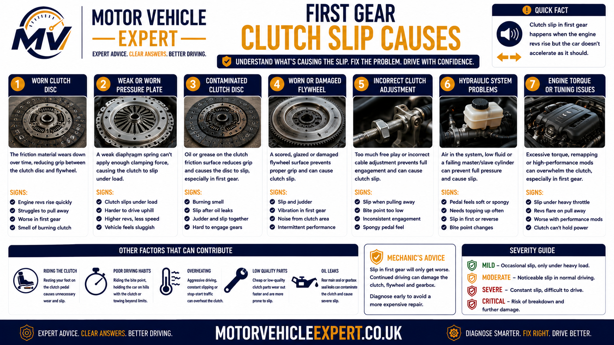
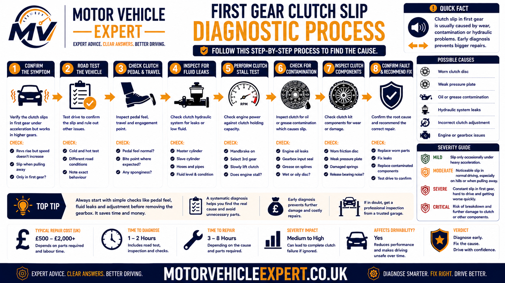
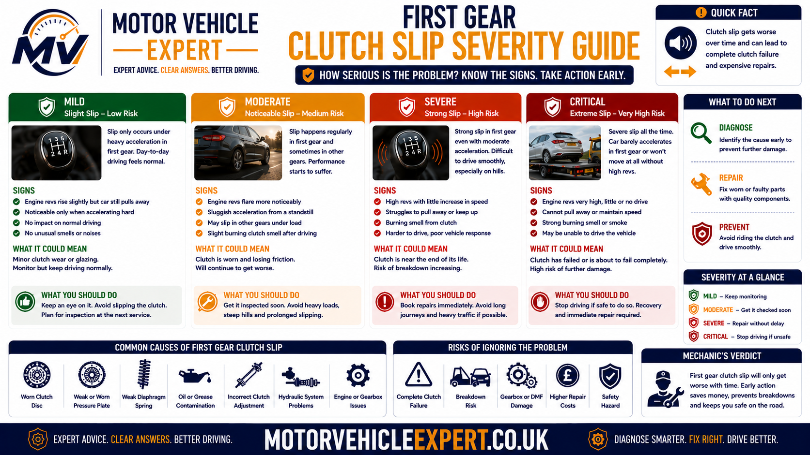
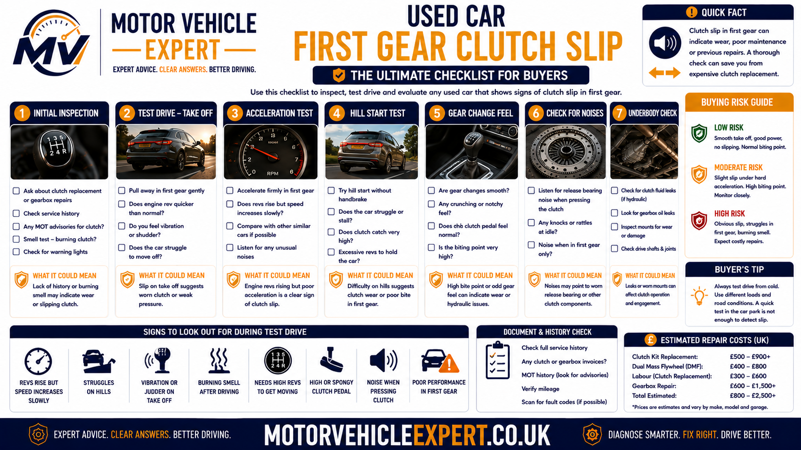

Why is the clutch slipping in first gear?
A clutch slips in first gear when the friction surfaces cannot hold enough engine torque while the vehicle is moving from rest. Instead of transferring all engine power into the gearbox, the clutch plate slides against the flywheel and pressure plate. Engine speed rises, acceleration is delayed and additional heat is created.
The most common causes are worn or glazed clutch lining, oil contamination, weak pressure plate clamping, a release mechanism that prevents full engagement, incorrect adjustment or a fault following recent clutch replacement. A poor flywheel surface can also contribute to repeated slip and heat damage.
Strongest warning sign
Engine revs rise while road speed increases slowly or the vehicle hesitates before moving away.
Why first gear exposes it
The clutch must overcome the stationary vehicle's full take-off load while it is still partially engaged.
Can you keep driving?
Mild slip may allow limited driving, but repeated slip, smoke, burning smells or unsafe pull-away requires prompt inspection.
Best next step
Confirm whether engine speed and road speed separate during take-up, then inspect the clutch release system, oil leaks and friction components.
First confirm that the engine is actually producing excess revs while the vehicle fails to accelerate. Engine hesitation, low power and poor throttle response can feel slow without the clutch slipping. True slip shows a clear separation between engine speed and road speed.
Repeated high-rev pull-aways, hill starts or high-load acceleration tests generate additional heat. A clutch that still moves the vehicle can deteriorate into complete loss of drive within a short period.
Use the Motor Vehicle Expert Diagnostic App to record engine-speed flare, bite-point position, burning smells, temperature changes and whether the symptom also appears uphill or in higher gears. The app supports structured reporting but cannot inspect the internal clutch or confirm friction wear without physical checks.
Symptoms of clutch slip in first gear
First-gear clutch slip is most noticeable while the vehicle is moving away from rest. The engine may respond immediately to the accelerator, but the car hesitates, accelerates slowly or requires more engine speed than normal before it begins moving.
The clearest sign is a difference between engine speed and vehicle speed. If the rev counter rises sharply while road speed increases only slightly, the clutch is failing to transfer all available torque into the gearbox.
Engine revs rise
The engine speed increases rapidly as the accelerator is pressed, but the vehicle does not move away with matching force.
Delayed pull-away
The vehicle may hesitate before moving or feel as though the clutch is taking too long to connect the engine to the gearbox.
Weak acceleration
The engine sounds busy but the car feels slow, particularly uphill, when heavily loaded or when joining faster traffic.
High bite point
The clutch may begin engaging close to the top of the pedal travel. A high bite point supports a wear diagnosis but is not proof by itself.
Burning clutch smell
Repeated slip converts engine energy into heat and can create a sharp acrid smell similar to overheated brakes or burnt friction material.
Worse uphill
A gradient increases the torque required to move the vehicle, making a weak clutch lose grip more easily.
Worse when hot
A worn, glazed or contaminated clutch may hold when cold but lose more grip after repeated starts or slow traffic.
Judder as well as slip
Damaged or contaminated friction surfaces can alternate between gripping and sliding, producing both vibration and engine-speed flare.
Eventual loss of drive
In advanced failure, the engine may rev normally while the vehicle barely moves or remains stationary.
Symptom combinations and what they suggest
High bite point and mild hesitation
The clutch still moves the vehicle but engagement feels weaker than before. Friction wear or adjustment should be investigated.
Revs rise and acceleration falls
Engine speed and road speed separate clearly under take-off load, supporting genuine clutch slip.
Smoke, smell or almost no drive
The clutch is generating severe heat and may be close to complete failure.
A weak engine can make a car accelerate slowly, but the engine speed usually does not flare sharply. A slipping clutch allows the engine to rev more freely because the friction surfaces are not holding the drivetrain load.
Hill starts place high torque and heat through the clutch. Repeating them to confirm a fault can damage the friction lining, pressure plate and flywheel.
Why does the clutch slip when pulling away in first gear?
First gear is selected while the vehicle is stationary. The engine and flywheel are already rotating, but the gearbox output, driveshafts, wheels and vehicle mass are not yet moving. The clutch must therefore slip briefly while connecting these two different speeds.
A healthy clutch uses controlled slip for only long enough to move the vehicle smoothly. A worn or weak clutch remains in this sliding phase for too long because it cannot generate enough friction to hold the required torque.
1. Vehicle is stationary
The road wheels and gearbox output are stopped while the engine and flywheel continue rotating.
2. Clutch begins engaging
The pressure plate starts clamping the clutch plate against the flywheel as the pedal rises.
3. Take-off torque increases
The clutch must overcome vehicle weight, tyre resistance, road gradient and drivetrain inertia.
4. Weak friction begins slipping
If clamping force or friction is insufficient, the engine continues rotating faster than the clutch plate and gearbox input shaft.
Why first gear can appear worse than higher gears
During pull-away, the clutch is deliberately partially engaged while transmitting enough torque to move a stationary vehicle. This creates a visible opportunity for slip. Once the clutch is fully engaged, the friction surfaces should rotate together and the symptom may temporarily disappear.
However, many worn clutches also slip in higher gears because high gear acceleration can place substantial torque demand on the clutch. A driver may first notice the fault when moving off, then later experience engine-speed flare in fourth, fifth or sixth gear.
The first gear itself is not normally responsible for friction slip. It creates the operating condition in which a worn, contaminated or partially released clutch becomes easiest to notice.
If the clutch mainly slips under heavy acceleration in higher gears, compare the symptoms with clutch slip in high gears .
Common causes of clutch slipping in first gear
Clutch slip develops when friction or clamping force becomes too weak to transfer engine torque. The fault may be caused by normal wear, overheating, fluid contamination, release-system pressure, incorrect adjustment or problems introduced during a previous repair.
Worn clutch plate
Thin friction lining cannot generate enough grip against the flywheel and pressure plate.
Likelihood: HighGlazed friction material
Excessive heat hardens and polishes the lining, reducing friction and making the clutch more likely to slip.
Likelihood: High after overheatingOil contamination
Engine or gearbox oil on the friction lining reduces grip and can cause both slip and judder.
Likelihood: Medium to highWeak pressure plate
Worn diaphragm springs or heat distortion may reduce clamping force across the clutch plate.
Likelihood: MediumHydraulic release pressure
A master cylinder, slave cylinder or restricted return path may keep the release mechanism partially applied.
Likelihood: System dependentIncorrect cable adjustment
Insufficient free play can prevent the clutch from clamping fully when the pedal is released.
Likelihood: Cable systemsHeat-damaged flywheel
A polished, scored or distorted flywheel surface can reduce consistent friction and contribute to repeated overheating.
Likelihood: MediumIncorrect clutch components
An unsuitable clutch kit or release component may not provide the correct friction capacity or clamping geometry.
Likelihood: Higher after repairInstallation fault
Contamination, uneven tightening, incorrect alignment or disturbed mountings can create slip after replacement.
Likelihood: Higher after recent workExcess vehicle load
Towing, steep hills or heavy loading can expose a clutch that still holds during lighter driving.
Likelihood: Load dependentRiding the clutch
Resting a foot on the pedal may reduce pressure-plate clamping and cause continuous light slip.
Likelihood: Driving dependentHolding on the bite point
Balancing the car on a hill with the clutch creates prolonged slip, heat and accelerated wear.
Likelihood: High with repeated use
A complete diagnosis must identify why the clutch is slipping before replacement parts are authorised. Fitting a new clutch without correcting a leak or release fault can cause the problem to return.
A worn clutch may also have a heat-damaged flywheel, leaking concentric slave cylinder or rear crankshaft seal. The complete assembly should be assessed during gearbox removal.
Worn or glazed clutch plate
The clutch plate uses friction lining to grip the flywheel and pressure plate. As the lining wears thinner, the clutch loses some of its ability to hold engine torque. Repeated overheating can also glaze the surface, making it smoother and less effective.
During first-gear pull-away, the clutch must hold enough torque to move the vehicle from rest. A worn plate may initially grip, then begin slipping as engine speed and load increase.
Supporting symptoms
High bite point, burning smell, rising revs, weak hill starts and slip that worsens when warm.
How it progresses
Mild hesitation can develop into higher-gear slip, overheating and eventual loss of drive.
Likely repair
Clutch kit replacement with inspection of the flywheel, release system, oil seals and mounting condition.
A small amount of torque loss may be noticed as engine-speed flare before enough heat has developed to produce a strong burning smell.
For the wider symptom pattern, see clutch slipping symptoms .
Oil contamination from engine or gearbox seals
The clutch plate must remain dry. Engine oil from the rear crankshaft seal or gearbox oil from the input shaft seal can enter the bellhousing and contaminate the friction lining.
Oil reduces the coefficient of friction between the plate, flywheel and pressure plate. The clutch may slip continuously or alternate between gripping and releasing, creating a combination of slip, judder and burning smell.
Rear crankshaft seal leak
Engine oil escapes from the rear of the crankshaft and may spread across the flywheel and clutch assembly.
Gearbox input shaft seal leak
Gearbox oil can travel along the input shaft and contaminate the centre of the clutch plate.
Signs that support oil contamination
- Slip appears inconsistently from one pull-away to another.
- The clutch also judders or grabs.
- An oily or hot-friction smell develops.
- Oil is visible around the engine and gearbox joint.
- The clutch failed again after a previous replacement.
- The fault becomes worse as temperature rises.
Cleaning an oil-soaked clutch lining is not normally a dependable repair. The seal fault and the damaged friction components should be corrected during the same gearbox-removal operation.
The oil leak advisory guide explains how visible oil leaks, MOT wording and repair urgency are assessed.
Weak or heat-damaged pressure plate
The pressure plate clamps the clutch plate against the flywheel. If its diaphragm spring weakens, the cover distorts or the friction face becomes heat damaged, clamping pressure may fall below the level needed to hold engine torque.
Weak diaphragm spring
Reduced spring force means the clutch plate is not held tightly enough against the flywheel.
Heat distortion
Repeated slip can create hot spots and uneven contact across the pressure plate face.
Release mechanism preload
Constant pressure from a hydraulic, cable or bearing fault may keep the pressure plate partly released.
A clutch kit generally includes the pressure plate because reusing a worn or heat-damaged cover can cause a new friction plate to slip or engage poorly.
Flywheel condition and clutch slip
The flywheel provides one of the two main friction surfaces used by the clutch plate. A polished, scored, cracked or heat-damaged surface can reduce consistent grip and transfer heat back into the new clutch.
A dual mass flywheel also contains internal damping components. Although internal flywheel wear does not usually cause friction slip by itself, excessive movement or heat damage may make clutch engagement unstable and can justify replacement during the same repair.
Solid flywheel problems
Heat spots, scoring, cracking or excessive run-out can reduce the quality of the clutch friction surface.
Dual mass flywheel problems
Excessive movement, weak damping, rattling and shutdown knocks can accompany clutch wear and may increase the total repair scope.
Supporting flywheel clues
- Rattle at idle that changes with clutch-pedal position.
- Knock during engine start-up or shutdown.
- Judder while moving away.
- Previous clutch replacement without flywheel renewal.
- Visible heat marks or scoring after gearbox removal.
- Excess movement outside the manufacturer's specification.
Gearbox bearings, release bearings, engine mounts and other drivetrain components can create similar sounds. The flywheel should be measured and assessed against the correct vehicle-specific limits.
Hydraulic, cable and release-system faults
The clutch must be allowed to engage fully when the pedal is released. Any fault that leaves pressure on the release bearing or pressure plate can reduce clamping force and create slip.
Master cylinder not returning
Internal restriction or seal problems may keep hydraulic pressure in the release circuit.
Slave cylinder fault
A sticking or incorrectly operating slave cylinder may prevent full release-mechanism return.
Concentric slave cylinder
Internal hydraulic release bearings can leak or bind and normally require gearbox removal for replacement.
Incorrect cable free play
A cable adjusted too tightly can hold the release mechanism partly applied even with the pedal raised.
Release bearing binding
A bearing, guide tube or fork that does not return freely may reduce clutch clamping force.
Pedal obstruction
Floor mats, trim or pedal linkage problems can prevent full pedal return on some vehicles.
Clues that suggest a release-system fault
- The clutch pedal does not return fully.
- The bite point changes during the journey.
- Slip begins after hydraulic or cable work.
- The pedal feels unusually light, heavy or inconsistent.
- Gear selection is also difficult.
- Hydraulic fluid is leaking or the reservoir level is falling.
Compare sudden pedal-pressure loss with clutch pedal goes to the floor and a pedal that fails to return with clutch pedal stuck down .
Why a new clutch may slip in first gear
A newly fitted clutch should transfer torque without persistent slip. If the fault begins immediately after replacement, the installation, flywheel, release system and contamination risk should be reviewed before the vehicle is driven further.
Oil contamination
An unrepaired seal leak or contamination during fitting can prevent the new friction lining from gripping correctly.
Incorrect component selection
The clutch kit may not match the engine, gearbox, flywheel or release mechanism specification.
Flywheel reused in poor condition
A damaged friction surface can overheat or glaze the new clutch quickly.
Pressure plate installed incorrectly
Uneven tightening, incorrect torque or unsuitable fasteners can affect clamping force.
Release system not adjusted
Incorrect cable free play or hydraulic preload can leave the new clutch partly released.
Excess torque or wrong application
Modified engines, towing use or an unsuitable friction rating can exceed the capacity of the installed clutch.
Do not continue trying to bed in a clutch that clearly slips. Repeated driving can overheat new components and complicate a warranty claim.
For a complete post-installation diagnosis, read clutch slip after replacement .
Clutch slip vs clutch judder in first gear
Clutch slip and clutch judder can occur during the same pull-away, but they describe different faults. Slip is a loss of torque transfer, while judder is vibration caused by uneven engagement.
Engine speed rises without matching road speed
- The engine revs flare during pull-away.
- The vehicle accelerates more slowly than expected.
- A burning clutch smell may develop.
- The symptom often worsens uphill or when hot.
- Higher-gear slip may also be present.
- Advanced failure can cause complete loss of drive.
The vehicle shakes through the bite point
- The body vibrates while the clutch engages.
- The shaking often stops once the pedal is fully released.
- First gear and reverse may feel different.
- Mountings and flywheel faults may contribute.
- Engine speed may remain normal.
- The vehicle may still accelerate correctly after engagement.
Can a clutch slip and judder at the same time?
Yes. A worn, glazed or oil-contaminated clutch can alternate between gripping and sliding. The driver may feel the car shake while also seeing the engine revs rise without matching acceleration.
Rising revs point towards slip. Repeated shaking through the bite point points towards judder. When both happen together, friction damage or contamination becomes more likely.
For a complete vibration diagnosis, see clutch judder when pulling away and clutch vibration in first gear .
Engine hesitation vs clutch slip
A car that feels slow moving away does not always have a slipping clutch. An engine fault can reduce power, delay throttle response or create hesitation without the clutch losing grip.
The strongest distinction is whether engine speed increases freely while road speed fails to follow. With an engine-performance fault, both engine speed and vehicle acceleration are usually weak together.
Revs rise but acceleration does not
- The engine responds immediately to the accelerator.
- Road speed increases slowly.
- The rev counter may flare sharply.
- A burning friction smell may follow.
- The symptom worsens uphill or under load.
- Reducing throttle may allow the clutch to grip again.
Engine speed and acceleration are both weak
- The engine hesitates or stutters.
- Revs may rise slowly rather than flare.
- The exhaust note may sound uneven.
- An engine warning light may be present.
- The fault continues after the clutch is fully engaged.
- Fuel, ignition, air or turbo faults may be involved.
Checks that help separate the faults
Rev-speed comparison
Observe whether engine speed rises faster than vehicle speed during ordinary pull-away.
Post-engagement acceleration
Once the clutch is fully engaged, continued hesitation supports an engine or drivetrain problem rather than take-up slip alone.
Engine fault evidence
Warning lights, diagnostic trouble codes, rough idle and uneven exhaust behaviour should be checked before clutch replacement.
Poor acceleration can come from engine, turbocharger, fuel, air, exhaust, brake or gearbox faults. Genuine clutch slip should show a clear loss of connection between engine speed and road speed.
Compare broader performance symptoms with car feels slow to accelerate and car revs but will not accelerate .
Cold vs hot clutch slip in first gear
Temperature can change clutch friction and hydraulic behaviour. A worn clutch may hold better when cold and begin slipping after the friction surfaces heat up, while contamination or release-system faults can create less predictable patterns.
Cold-slip clues
- Hydraulic or cable return may be restricted.
- Contaminated friction may behave inconsistently.
- Pedal or bite point may change after warming.
- The first pull-away may be the weakest.
- Cold engine operation may confuse the diagnosis.
Heat-related slip clues
- Worn friction lining loses more grip.
- Glazed surfaces become hotter and smoother.
- Pressure plate clamping may reduce with heat.
- Burning smell appears after slow traffic.
- Drive fades after repeated pull-aways.
A clutch that operates when cold but begins slipping once warm is likely close to the limit of its torque capacity. Continued use can accelerate the failure rapidly.
Compare normal cold and warm operation only. Repeated hill starts, towing tests or prolonged slipping can cause permanent damage and distort the original symptom.
How a mechanic diagnoses clutch slip in first gear
A professional diagnosis should confirm genuine clutch slip, identify why the clutch is not holding torque and determine whether gearbox removal is justified. The process starts with controlled observations and external checks rather than repeated high-load testing.
1. Confirm engine-speed flare
Establish whether engine speed rises faster than road speed during an ordinary first-gear pull-away.
2. Compare load conditions
Note whether the symptom changes uphill, with additional load or in higher gears.
3. Check pedal and bite point
Assess pedal return, free play, bite-point position and any temperature-related changes.
4. Inspect the release system
Check cable adjustment, master cylinder, slave cylinder, release bearing and hydraulic return.
5. Look for oil contamination
Inspect the engine and gearbox joint and review rear crankshaft or input shaft seal leakage.
6. Assess flywheel clues
Listen for rattle, shutdown knock, judder and evidence of previous heat damage.
7. Review recent repair history
Confirm whether the clutch, flywheel, slave cylinder or seals were replaced and whether the fault followed recent work.
8. Inspect internally if justified
Remove the gearbox to inspect the clutch plate, pressure plate, flywheel, release mechanism and contamination source.

The workflow reduces unnecessary clutch replacement and helps prevent repeat failure caused by missed seal, hydraulic or flywheel faults.
Road-test observations
Normal pull-away
Move away using ordinary engine speed and note whether the revs rise without a proportional increase in road speed.
Uphill behaviour
Observe normal driving on a gradient only where safe. Do not repeat hill starts to force the fault.
Higher-gear comparison
Determine whether slip also appears under ordinary acceleration in fourth, fifth or sixth gear.
External checks before gearbox removal
- Check the clutch pedal returns fully.
- Check cable free play where adjustment is provided.
- Inspect clutch fluid level and hydraulic leakage.
- Inspect master and slave cylinder operation.
- Look for oil around the engine and gearbox joint.
- Check engine idle and warning lights.
- Listen for flywheel and release-bearing noise.
- Review clutch, flywheel and oil-seal invoices.
- Confirm the vehicle has not been modified beyond clutch capacity.
- Check that poor acceleration is not engine related.
Record rev behaviour, load conditions, bite point, temperature, smells and recent repairs in the Motor Vehicle Expert Diagnostic App . A structured report can help the garage reproduce the fault with the minimum necessary clutch load.
A slipping clutch can overheat very quickly. Controlled confirmation should use the minimum necessary load and be stopped immediately if the smell, smoke or loss of drive worsens.
What different first-gear clutch slip patterns may indicate
Symptom patterns help prioritise the inspection, but they are not proof on their own. The final diagnosis should combine road-test evidence, release-system checks, leak inspection and internal component condition.
| Slip pattern | Fault areas to prioritise | Supporting checks |
|---|---|---|
| Revs rise only during pull-away | Worn clutch, glazed lining, release preload | Check bite point, pedal return and temperature pattern |
| Slip also appears in higher gears | Advanced friction wear or weak pressure plate | Confirm torque loss under ordinary acceleration |
| Slip worsens when hot | Worn or glazed clutch, pressure plate heat damage | Check smell and deterioration after normal driving |
| Slip plus judder | Contamination, flywheel surface or friction damage | Inspect leaks, flywheel clues and mountings |
| Pedal fails to return fully | Hydraulic, cable or release-system fault | Check free play, cylinders and release movement |
| Oil visible near bellhousing | Rear crankshaft or gearbox input seal | Trace and repair the leak during clutch work |
| Slip began after replacement | Installation, contamination, flywheel or adjustment fault | Return to the fitting garage promptly |
| Engine feels weak but revs do not flare | Engine-performance problem | Diagnose fuel, ignition, air and turbo systems |
| Smoke and almost no drive | Severe clutch overheating or advanced failure | Stop driving and arrange recovery |
A clutch may grip better after cooling or with reduced throttle, but worn, glazed or contaminated friction surfaces remain defective.
First-gear clutch slip severity guide
Severity depends on how much engine speed separates from road speed, whether the vehicle can move away predictably and whether heat, smoke or pedal changes are developing.

Judge the risk together with burning smell, temperature change, hydraulic leakage, judder and abnormal mechanical noise.
Mild and occasional hesitation
Engine-speed flare is slight, the vehicle still moves away predictably and no smell, smoke, pedal change or severe judder is present.
Record the conditions and arrange diagnosis if the symptom repeats or becomes stronger.
Repeated or worsening slip
The revs flare during most pull-aways, the clutch smells hot, hill starts weaken or slip begins appearing in higher gears.
Limit driving and avoid towing, heavy loads, congestion and steep gradients before diagnosis.
Severe slip or lost drive
The engine revs with little vehicle movement, smoke appears, the burning smell is strong or the clutch and pedal behaviour change suddenly.
Stop in a safe location and arrange professional assistance or recovery.
Factors that increase urgency
- Slip is worsening over a short distance.
- A strong burning smell develops.
- Smoke appears from the bellhousing area.
- The vehicle struggles to move away.
- Slip appears in several gears.
- The pedal fails to return fully.
- Oil or hydraulic fluid is leaking.
- Judder or heavy flywheel noise appears.
- The fault began immediately after clutch replacement.
- Drive is lost on a hill or in traffic.
A slipping clutch can deteriorate rapidly once heat builds. Recovery is safer than continuing until the vehicle becomes stranded or unable to pull away.
Can you keep driving with clutch slip in first gear?
Mild clutch slip does not always mean the vehicle will lose drive immediately, but continued use creates additional heat every time the clutch fails to hold torque. The safest decision depends on how much engine speed separates from road speed, whether the vehicle can move away predictably and whether smell, smoke, pedal changes or hydraulic leakage are present.
A clutch that only hesitates slightly may still allow a short journey to a garage, but a vehicle that struggles to enter traffic, climb a modest gradient or move away without excessive revs should not be driven simply because some drive remains.
Mild and stable slip
The rev flare is slight, the vehicle still moves away predictably and there is no smoke, strong burning smell, hydraulic leak, sudden pedal change or heavy mechanical noise.
Repeated or worsening slip
The clutch slips during most pull-aways, hill starts are becoming weaker or the fault now appears in higher gears or after the vehicle has warmed up.
Severe slip or loss of drive
The engine revs with little vehicle movement, smoke appears, the burning smell is intense or the vehicle cannot pull away safely.
Stop driving immediately if:
- The vehicle cannot move away safely or predictably.
- Engine revs rise with almost no increase in road speed.
- Smoke appears from the engine and gearbox area.
- A strong burning-clutch smell remains after stopping.
- The clutch pedal stays down or changes suddenly.
- Hydraulic fluid is leaking or the reservoir level is falling.
- Gear selection becomes difficult enough to affect control.
- Heavy judder, grinding or repeated knocking develops.
- The vehicle loses drive while climbing a hill or entering traffic.
- The slip worsens substantially during one short journey.
Applying more engine speed may keep the vehicle moving temporarily, but the additional torque creates more clutch heat. This can damage the friction lining, pressure plate and flywheel and may leave the vehicle without drive.
How to reduce clutch load before inspection
Avoid towing and heavy loading
Additional vehicle mass increases the torque needed during pull-away and can make a weak clutch deteriorate more quickly.
Avoid steep routes
Choose a level, short route where possible and avoid repeated hill starts or steep multi-storey ramps.
Use the parking brake on hills
Hold the vehicle securely with the parking brake rather than balancing it on the clutch bite point.
Leave space in slow traffic
Allow a safe gap and engage the clutch fully rather than creeping continuously with partial clutch pressure.
A clutch kit may be repairable before severe overheating damages the flywheel and pressure plate. Recovering a vehicle with advanced slip can be cheaper than continuing until the whole assembly is heat damaged.
Will clutch slip in first gear fail an MOT?
Clutch friction wear is not normally tested as a separate item during the standard UK MOT test. A vehicle does not automatically fail merely because the clutch slips when pulling away in first gear.
However, the vehicle must still be capable of being driven safely onto and off the test equipment. Related faults such as serious oil leakage, insecure engine or gearbox mountings or hydraulic defects affecting vehicle control may also be relevant.
Clutch slip alone
Clutch torque capacity is not normally measured as a separate MOT inspection item.
Vehicle cannot move safely
Severe loss of drive may prevent the tester from positioning the vehicle or completing the test safely.
Serious oil leakage
A substantial engine or gearbox oil leak may be assessed according to its severity, location and safety or environmental impact.
Hydraulic-fluid leak
A clutch hydraulic fault may become directly relevant where it shares a reservoir with the braking system or affects safe control.
Insecure powertrain mounting
A badly damaged engine or gearbox mounting may be relevant if it allows unsafe movement or compromises component security.
Engine fault mistaken for clutch slip
Warning lights, emissions faults or poor engine running may be assessed separately during the MOT.
Why an MOT pass does not prove the clutch is healthy
The tester does not remove the gearbox, inspect clutch lining thickness, measure pressure-plate clamping force or assess the internal flywheel surface. A vehicle can pass its MOT and still require a clutch or flywheel replacement shortly afterwards.
| Condition | Likely MOT relevance | Recommended action |
|---|---|---|
| Mild clutch slip with no other defect | Not normally a direct failure item | Arrange diagnosis despite any MOT pass |
| Severe slip and poor vehicle movement | Test may not be completed safely | Recover and repair before the test |
| Significant engine or gearbox oil leak | May be recorded or fail depending on severity | Trace and repair the source |
| Hydraulic leak affecting brake-fluid level | Potential braking-system relevance | Do not drive until inspected |
| Severely insecure engine or gearbox mounting | May be a testable safety defect | Repair before presenting the vehicle |
| Engine-management fault and poor acceleration | Warning-light or emissions relevance possible | Diagnose engine and clutch symptoms separately |
Used-car buyers should assess clutch slip directly. MOT validity does not prove that the clutch, pressure plate, flywheel or hydraulic release system is mechanically sound.
For the wider UK test position, read can a clutch fail an MOT? The oil leak advisory guide explains how visible oil leaks and repair urgency may be assessed.
Clutch slipping in first gear repair costs
The repair cost depends on whether the fault is ordinary clutch wear, oil contamination, weak pressure-plate clamping, a hydraulic release fault or poor work following an earlier replacement.
These are broad UK planning estimates for 2026 rather than fixed quotations. Vehicle design, labour rates, parts quality, gearbox access, four-wheel-drive systems and premium components can change the final price substantially.
Clutch slip inspection
Controlled road test, pedal and bite-point assessment, hydraulic or cable checks and initial inspection for oil leakage.
£60–£150Clutch kit replacement
Replacement clutch plate, pressure plate and release bearing where the fitted system uses a separate bearing.
£550–£1,100Clutch and dual mass flywheel
Replacement of the clutch kit and worn dual mass flywheel during the same gearbox-removal operation.
£900–£1,800+Rear crankshaft seal with clutch
Repair of an engine rear oil seal plus replacement of contaminated clutch components.
£700–£1,400+Input shaft seal with clutch
Repair of a gearbox input-area leak and replacement of affected friction components.
£700–£1,500+Concentric slave cylinder
An internal hydraulic release bearing normally requires gearbox removal and is commonly replaced with the clutch.
£600–£1,200+Clutch master cylinder
Replacement and bleeding where the master cylinder prevents correct clutch engagement or pedal return.
£180–£450External slave cylinder
Replacement of an externally mounted slave cylinder followed by bleeding and operational checks.
£150–£350Clutch cable adjustment or replacement
Adjustment of free play or replacement of a stretched, binding or damaged clutch cable.
£80–£300Solid flywheel assessment
Inspection and, where suitable, professional resurfacing or replacement of a heat-damaged solid flywheel.
£150–£600 additionalPost-replacement investigation
Inspection of contamination, flywheel condition, component compatibility, release adjustment and workmanship after recent clutch work.
£0–£300 initial assessmentGearbox oil replacement
Correct gearbox oil may be renewed during clutch work where draining is required or the existing oil condition is poor.
£60–£180 additionalRequest the expected clutch-kit price and the likely total if the flywheel, internal slave cylinder or oil seals are also found defective after the gearbox is removed.
First-gear clutch slip repair decision table
| Diagnosis or finding | Likely repair | Broad UK estimate | Priority |
|---|---|---|---|
| Mild slip with no confirmed internal fault | Road test and structured inspection | £60–£150 | Diagnose before replacing parts |
| Incorrect cable adjustment | Adjust or replace cable | £80–£300 | Prompt low-cost check |
| Worn clutch, flywheel serviceable | Clutch kit replacement | £550–£1,100 | High priority |
| Worn clutch and failed dual mass flywheel | Clutch kit and DMF replacement | £900–£1,800+ | Major repair |
| Oil-contaminated clutch | Repair seal and replace clutch | £700–£1,500+ | Repair source and damage together |
| Concentric slave cylinder fault | Slave cylinder and usually clutch | £600–£1,200+ | Avoid duplicate gearbox-removal labour |
| Slip after recent replacement | Warranty inspection and installation review | Warranty dependent | Return promptly |
| Engine fault mistaken for clutch slip | Engine diagnosis and fault-specific repair | £80–£1,000+ | Correct engine fault first |
| Heat-damaged solid flywheel | Flywheel resurfacing or replacement with clutch | £700–£1,400+ | Do not reuse an unsuitable surface |
What should a clutch quotation include?
- The exact clutch kit brand and included components.
- Whether the release bearing is included.
- Whether the concentric slave cylinder is included.
- Whether the dual mass flywheel is included or separate.
- How the existing flywheel will be assessed.
- Whether gearbox oil replacement is included.
- Whether hydraulic bleeding is included.
- Whether accessible oil seals will be inspected.
- Whether cable adjustment or hydraulic return will be checked.
- The parts and labour warranty period.
- The process for approving additional work.
A low clutch quote may exclude the flywheel, internal slave cylinder, oil seals, gearbox oil or additional labour. Compare what is included and the warranty provided before choosing a repairer.
For a wider breakdown of clutch-kit, flywheel and labour pricing, see the UK clutch replacement cost guide .
Should you buy a used car with clutch slip in first gear?
A used car that slips while pulling away should be treated as having an unresolved mechanical fault until a competent inspection identifies the cause. The repair may involve a clutch kit alone, but it can also require a dual mass flywheel, concentric slave cylinder, rear crankshaft seal, gearbox input seal or correction of poor previous workmanship.
Do not accept statements such as “it only needs adjustment”, “the clutch just needs bedding in” or “they all do that” without supporting evidence. A healthy clutch should transfer engine torque without engine-speed flare, persistent burning smell or delayed vehicle movement.
Confirmed minor release fault
An independent inspection identifies a low-cost cable adjustment or external hydraulic fault, and the clutch itself holds torque correctly after repair.
Mild slip with uncertain repair scope
The car still moves normally under light load, but the clutch, flywheel, hydraulics and oil seals have not been assessed properly.
Severe slip, smoke or poor history
Engine revs rise sharply, the vehicle struggles to move, a strong burning smell develops or recent clutch work cannot be supported by an itemised invoice and warranty.

Do not deliberately abuse a seller's clutch with repeated hill starts, prolonged slipping or aggressive high-load testing. Ordinary driving should provide enough evidence to justify professional diagnosis.
Before starting the engine
Review the paperwork
- Look for an itemised clutch replacement invoice.
- Confirm the date and mileage of any clutch work.
- Check which clutch kit brand was fitted.
- Ask whether the flywheel was replaced or reused.
- Confirm whether the slave cylinder was renewed.
- Check the parts and labour warranty period.
Inspect the parked vehicle
- Confirm the engine is genuinely cold where possible.
- Look beneath the vehicle for fresh oil or hydraulic fluid.
- Check the clutch pedal returns fully.
- Inspect the engine and gearbox joint where visible.
- Look for warning lights before start-up.
- Ask when the slip was first noticed.
During the test drive
Normal first-gear pull-away
Engine speed and road speed should rise together. A sudden flare in revs with delayed movement supports genuine clutch slip.
Hill and load behaviour
Observe normal operation on a modest gradient where safe. Do not repeat hill starts merely to force the symptom.
Higher-gear behaviour
Under ordinary acceleration, note whether slip also appears in fourth, fifth or sixth gear.
Bite point and pedal return
Check whether the bite point is unusually high, inconsistent or changes after the vehicle warms up.
Smell and temperature
A burnt friction smell after an ordinary test drive indicates heat is being generated during clutch slip.
Noise and vibration
Listen for flywheel rattle, shutdown knock, release-bearing noise or clutch judder during take-up.
Questions to ask the seller
- When did the first-gear clutch slip begin?
- Is it worse when cold, hot, uphill or heavily loaded?
- Does the clutch also slip in higher gears?
- Has a burning clutch smell or smoke ever appeared?
- Has the clutch kit been replaced previously?
- Was the dual mass flywheel replaced or reused?
- Were the rear crankshaft and gearbox input seals inspected?
- Has the master or slave cylinder been replaced?
- Is there an itemised repair invoice with warranty?
- Will the seller permit an independent inspection?
Clutch friction condition is not fully assessed during an MOT. A car can have a fresh certificate and still require an expensive clutch, flywheel or hydraulic repair.
Until the gearbox has been removed, allow for the possibility of a clutch kit, dual mass flywheel, concentric slave cylinder and oil-seal repair rather than assuming the cheapest explanation.
Accept, negotiate or walk away?
The correct decision depends on symptom severity, documentary evidence, vehicle value and whether the purchase price reflects the credible complete repair cost.
| Vehicle condition | Recommended decision | Reason |
|---|---|---|
| Minor cable adjustment fault confirmed independently | Consider buying with repair allowance | The fault scope is supported by evidence |
| Mild slip but no diagnosis or quotation | Negotiate heavily or pause | Internal clutch and flywheel condition remain unknown |
| Slip plus burning smell | Assume clutch replacement risk | Heat and friction damage are likely |
| Slip plus judder or flywheel noise | Assume clutch and flywheel risk | The repair may exceed £1,000 |
| Smoke or almost no vehicle movement | Walk away | The clutch may be close to complete failure |
| Slip began immediately after recent replacement | Require warranty resolution first | Installation, contamination or release faults may remain |
| Seller refuses independent inspection | Walk away | The financial risk cannot be assessed properly |
| Price reflects clutch and DMF replacement | Consider with additional contingency | Seal, hydraulic or gearbox costs may still appear |
Pre-diagnostic first-gear clutch slip checklist
Accurate observations help the technician confirm the problem without repeatedly overheating the clutch. Record when the rev flare appears, what load the vehicle is under and whether the symptom changes with temperature.
Record when it happens
- First pull-away of the day
- After the vehicle is warm
- Level road
- Uphill
- With passengers or luggage
- In higher gears as well
Record the symptoms
- Engine-speed flare
- Delayed vehicle movement
- High bite point
- Burning smell
- Judder or vibration
- Smoke or loss of drive
Record repair history
- Clutch replacement date
- Flywheel replacement date
- Hydraulic repairs
- Cable adjustment
- Oil-leak repairs
- Warranty details
Safe checks a driver can make
- Check whether the clutch pedal returns fully.
- Confirm whether the bite point has changed.
- Look beneath the vehicle for fresh fluid leakage.
- Check whether gears select normally.
- Listen for abnormal start-up and shutdown noises.
- Observe whether the engine idles smoothly.
- Record whether slip worsens after warming up.
- Retain clutch, flywheel and hydraulic invoices.
- Stop testing if the smell, smoke or slip worsens.
Record the operating conditions using the Motor Vehicle Expert Diagnostic App before arranging physical inspection. The app can organise the evidence, but it cannot confirm clutch lining thickness, pressure-plate force or flywheel condition.
Checks to leave to a competent technician
- High-load clutch slip confirmation.
- Hydraulic pressure and pedal-return testing.
- Working beneath a raised vehicle.
- Removing bellhousing covers or undertrays.
- Removing the gearbox.
- Measuring dual mass flywheel movement.
- Inspecting clutch lining and pressure-plate condition.
- Assessing flywheel run-out and heat damage.
- Replacing oil seals and bleeding the hydraulic system.
Clutch and gearbox inspection requires correct lifting equipment, suitable support points, level ground and competent working procedures.
Clutch slipping in first gear: key takeaways
Revs rising is the key clue
True clutch slip creates a clear difference between engine speed and vehicle acceleration.
First gear exposes take-off load
The clutch must move the stationary vehicle while partially engaged, exposing weak friction and clamping force.
The cause must be identified
Wear, oil contamination, pressure-plate weakness, hydraulics and installation faults can all cause slip.
Heat makes the fault worse
Every slipping event creates heat that can damage the clutch, pressure plate and flywheel.
An MOT pass proves little
Clutch torque capacity and internal flywheel condition are not fully assessed during the standard MOT.
Used-car buyers need evidence
Obtain an independent inspection and budget for the credible full repair before purchasing.
First-gear clutch slip should be diagnosed before repeated use creates severe heat damage. Confirm genuine engine-speed flare, inspect the release system and leaks, and assess the clutch, pressure plate and flywheel as one connected assembly.
Related clutch and acceleration guides
Use these live Motor Vehicle Expert guides to compare first-gear clutch slip with higher-gear slip, clutch judder, overheating, pedal faults and engine-performance problems.
Clutch slipping symptoms
Understand the complete warning-sign pattern, including rev flare, poor acceleration and burning smell.
Clutch slipping symptoms →Clutch slip in high gears
Learn why worn clutches often slip under heavy torque in fourth, fifth or sixth gear.
High-gear clutch slip →Clutch slip after replacement
Review contamination, flywheel condition, adjustment and installation faults after recent clutch work.
New clutch slip diagnosis →Clutch vibrates in first gear
Compare engine-speed flare with body vibration, mount movement and uneven clutch engagement.
First-gear vibration guide →Clutch judder when pulling away
Diagnose shaking through the bite point, flywheel faults and oil contamination.
Clutch judder guide →Burnt clutch symptoms
Understand clutch overheating, smoke, smell and loss of drive.
Burnt clutch symptoms →Clutch burning smell
Compare clutch heat with brake, oil, rubber and electrical smells.
Clutch smell guide →High clutch bite point
Learn how clutch wear, cable adjustment and hydraulic design affect engagement position.
High bite point guide →Clutch pedal goes to the floor
Diagnose hydraulic pressure loss, master-cylinder and slave-cylinder faults.
Clutch pedal pressure guide →Clutch pedal stuck down
Understand why a clutch pedal may fail to return and when recovery is required.
Clutch pedal stuck guide →Clutch noise when pressed
Compare release-bearing, fork, pressure-plate and gearbox noises.
Clutch pedal noise guide →Car revs but will not accelerate
Compare clutch slip with automatic transmission and engine-power faults.
Revs without acceleration →Car feels slow to accelerate
Separate clutch slip from fuel, air, turbocharger, engine and brake problems.
Slow acceleration guide →UK clutch replacement costs
Compare clutch kit, flywheel, hydraulic and labour costs before authorising repairs.
Clutch replacement costs →Diagnostic App
Organise rev flare, bite point, load, temperature and smell evidence before visiting a garage.
Open the Diagnostic App →Clutch slipping in first gear FAQs
These visible answers match the FAQ structured data in the page head.
Why does my clutch slip in first gear?
Clutch slip in first gear is commonly caused by worn or glazed friction material, oil contamination, weak pressure plate clamping, release-system faults, excessive heat, incorrect clutch installation or an unsuitable clutch component.
What are the symptoms of clutch slip in first gear?
Common symptoms include engine revs rising without matching acceleration, delayed vehicle movement, a high bite point, burning clutch smell, weak hill starts, difficulty moving away and clutch engagement that worsens as the vehicle becomes hot.
Why do the engine revs rise but the car barely moves?
The engine revs rise because the clutch cannot hold enough torque between the flywheel and gearbox input shaft. Engine power is being converted into clutch heat instead of vehicle movement.
Can a clutch slip only in first gear?
A clutch may appear to slip mainly in first gear during pull-away, especially under heavy load, although worn clutches often also slip in higher gears. The operating conditions should be compared before deciding the fault is limited to one gear.
Why does the clutch slip when pulling away?
Pulling away requires the clutch to overcome the vehicle's stationary mass while it is partially engaged. Worn, contaminated or weakly clamped friction surfaces may fail to transfer enough torque during this high-load take-up phase.
Can oil contamination cause clutch slip in first gear?
Yes. Engine oil from a rear crankshaft seal or gearbox oil from an input shaft seal can contaminate the clutch lining, reducing friction and causing slip, judder, burning smells and inconsistent engagement.
Can a weak pressure plate cause clutch slip?
Yes. A worn, heat-damaged or distorted pressure plate may not clamp the clutch plate firmly enough against the flywheel, allowing it to slip when engine torque rises.
Can a dual mass flywheel cause clutch slip?
A dual mass flywheel does not usually cause friction slip by itself, but excessive wear, heat damage or an uneven friction surface can contribute to poor clutch engagement and may require replacement with the clutch.
Can a hydraulic clutch fault cause slipping?
Yes. A hydraulic or release-system fault that prevents the clutch from engaging fully can leave pressure on the release mechanism and reduce clutch clamping force.
Can a new clutch slip in first gear?
A new clutch can slip because of oil contamination, incorrect installation, unsuitable components, poor flywheel condition, incorrect release adjustment or a hydraulic fault. Persistent slip after replacement should be returned to the fitting garage.
Does clutch slip get worse when hot?
Yes. A worn or contaminated clutch may lose more grip as temperature rises. Repeated slipping creates additional heat, which can make the fault worsen rapidly.
Is clutch slip the same as clutch judder?
No. Clutch slip occurs when engine speed rises without a matching increase in road speed, while clutch judder is vibration during engagement. A worn or contaminated clutch can produce both symptoms.
Can I keep driving with clutch slip in first gear?
Limited driving may be possible if the slip is mild and the vehicle remains predictable, but worsening slip, burning smells, smoke, poor acceleration or difficulty moving away safely requires prompt inspection.
When should I stop driving with a slipping clutch?
Stop driving if the vehicle cannot move away safely, engine revs rise with almost no acceleration, smoke appears, a strong burning smell persists, drive is being lost or the pedal changes suddenly.
How is clutch slip in first gear diagnosed?
Diagnosis includes confirming engine-speed flare during take-up, checking the bite point and pedal return, inspecting the hydraulic or cable release system, looking for oil leakage, comparing cold and hot operation and examining the clutch and flywheel if gearbox removal is justified.
Will clutch slip in first gear fail an MOT?
Clutch wear is not normally tested as a separate MOT item, so clutch slip alone does not automatically cause failure. Related serious fluid leaks, insecure mountings or another fault affecting safe control may still be relevant.
How much does clutch slip repair cost in the UK?
A clutch kit replacement commonly costs several hundred pounds in the UK and can exceed one thousand pounds when a dual mass flywheel, concentric slave cylinder, oil seal or difficult gearbox-removal procedure is also required.
Should I buy a used car with clutch slip in first gear?
Treat first-gear clutch slip as an unresolved mechanical fault. Arrange an independent inspection, review clutch and flywheel invoices and price the credible complete repair before negotiating or purchasing the vehicle.